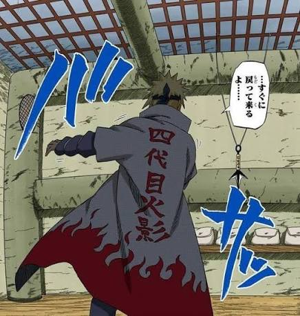
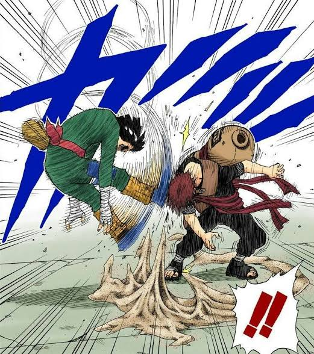
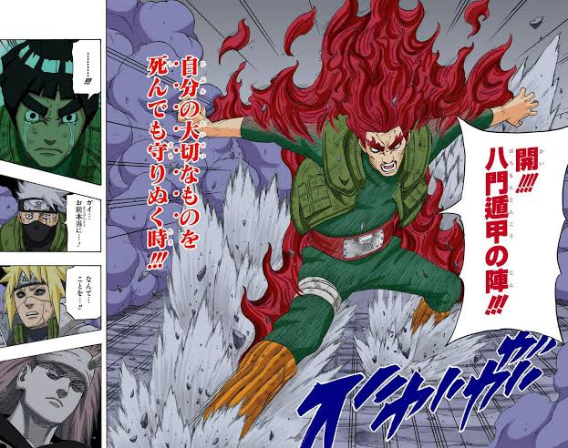

Naruto, criado por Masashi Kishimoto, é uma das obras mais influentes da história dos animes e mangás, conquistando gerações ao redor do mundo. A trama acompanha a jornada de Naruto Uzumaki, um jovem ninja órfão que carrega dentro de si a Raposa de Nove Caudas (Kurama), um monstro que devastou sua vila no passado. Por conta dessa condição, ele cresce marginalizado e solitário, mas transforma essa dor em motivação para alcançar seu maior sonho: tornar-se o Hokage, o líder máximo de sua vila, e finalmente conquistar o respeito e o reconhecimento de todos ao seu redor.
Ao longo de suas duas fases principais — a clássica e a Shippuden —, a série vai muito além de batalhas épicas e técnicas ninjas impressionantes. O anime constrói um universo rico focado no desenvolvimento de laços interpessoais, abordando temas profundos como a busca pela paz, o peso do ciclo de ódio e a importância da empatia. Através de personagens marcantes e complexos, como Sasuke Uchiha e Kakashi Hatake, a história ensina sobre superação e resiliência, consolidando a ideia de que o verdadeiro valor de um ninja não está em sua força, mas em sua capacidade de nunca desistir de seus princípios e de seus amigos.


